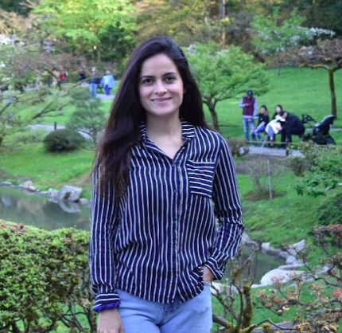

Ana.Aragon@bellevuecollege.edu
Bio
Financial Administrator with global experience, transitioning into information technology.
Excellent communication skills. Bi-lingual in English and Spanish.A self-starter and quick learner.
Education
2015 Universidad Autónoma de Chihuahua, B.S.B.A.
Actual Bellevue College, AAS
Experience
•Investigated and resolved discrepancies in monthly bank accounts while under tight deadlines.
• Tracked all capital spending against approved capital requests.
• Restructured and analyzed Contpaq and Adminpaq to improve budget reporting.